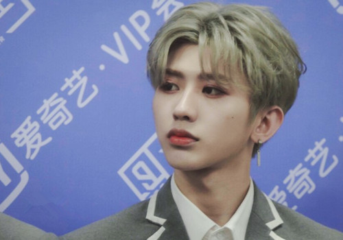

蔡徐坤
2012年4月，蔡徐坤因参加综艺节目《向上吧！少年》进入全国200强而进入娱乐圈；8月，参演个人首部偶像剧《童话二分之一》。2014年3月，参演个人首部电影《完美假妻168》；2015年7月，蔡徐坤参加真人秀节目《星动亚洲》，并成功进入全国前十五强；2016年10月，蔡徐坤通过10人男子组合SWIN正式出道；2018年1月，参加爱奇艺重点打造的中国首档偶像男团竞演养成类真人秀《偶像练习生》。2018年4月6日，在《偶像练习生》决赛中，蔡徐坤最终排名第一，作为Nine Percent组合成员正式出道。6月15日，参加的纪录片《NINEPERCENT花路之旅》在爱奇艺上线。2018年8月2日，入选福布斯2018年中国“30位30岁以下精英”榜单。8月18日，随组合参加2018微博粉丝嘉年华线下活动。12月18日，担任2019年北京卫视春晚代言人。同年12月，获第十二届音乐盛典咪咕汇年度“最佳彩铃销量歌手”、年度十大金曲《WaitWaitWait》、搜狐时尚盛典“年度人气男明星”以及今日头条年度盛典“年度偶像人物”。2019年2月，首登北京台春晚便包揽词曲，为其创作歌曲《那年春天》。2019年2月19日，蔡徐坤合约案胜诉，与原公司经纪合约解除。3月22日，发布海外公演主题曲《Bigger》。4月19日，发布单曲《Hard To Get》。12月25日，加盟《青春有你第二季》担任青春制作人代表。